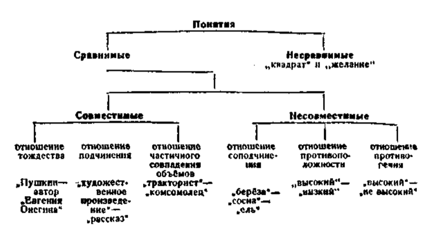

Глава III. ПОНЯТИЕ
§ I. Сущность понятия
Из предыдущей главы мы знаем, что мышление есть отображение в мозгу человека общих существенных свойств вещей, явлений внешнего мира.
Те вещи, явления окружающей нас действительности, о которых мы мыслим, принято в логике называть предметами мысли. Так, например, предметами нашей мысли могут быть карандаш, урожай, революция, ученик, высота, движение и т. п.
Вещи, явления обладают различными свойствами. Свойства вещей, явлений называются в логике признаками. Например, длина данного карандаша, его цвет, свойство быть орудием письма и т. д. — всё это его признаки. Своими признаками вещи, явления или отличаются друг от друга, или сходны друг с другом.
Познавая окружающую действительность, человек сравнивает предметы друг с другом, выявляет их сходство и различие; путём анализа и синтеза вскрывает сущность предметов, мысленно выделяет их признаки, абстрагирует и обобщает эти признаки.
В результате человек образует понятие о предметах и явлениях действительности.
Понятие — это мысль, которая отображает общие и существенные признаки предметов.
Например, в понятии «комета» отображены следующие признаки комет: 1) светило, 2) состоит из крайне разреженных газов, 3) при приближении к Солнцу постепенно выбрасывает светящийся хвост.
Все три перечисленных признака являются общими и существенными для комет.
Другой пример. В понятии «белки» отображены такие общие и существенные признаки белков: 1) органические вещества и 2) молекулы которых состоят из соединённых в большом количестве остатков различных аминокислот.
Существенным признаком предмета называется тот признак, который выражает коренное, наиболее важное свойство предмета; если существенный признак отсутствует, то предмет перестаёт быть данным предметом.
Например, существенным признаком химического элемента является строение атома, а несущественными — то или иное физическое состояние, внешняя форма и др.
Понятия только в том случае являются правильными, если они верно отражают действительность. Если же какое-либо понятие представляет собой неверное, искажённое отображение действительности, то такое понятие является ложным. Ложные понятия возникают, например, при отрыве теории от практики.
Правильные понятия вырабатываются в процессе трудовой деятельности многих людей; соответствие таких понятий предметам и явлениям действительности проверяется практикой человека.
§ 2. Понятие и представление
Понятия существенно отличаются от представлений.
Представления — это наглядные образы предметов, явлений. Поэтому нельзя, например, иметь представления о скорости движения света, так как нельзя получить наглядного образа такого движения. Но мыслить скорость движения света мы можем. Мы имеем понятие о движении света со скоростью 300 000 км в секунду.
Представления всегда имеют индивидуальный характер. В них главное не отделяется от второстепенного, они могут складываться и из несущественных признаков.
Понятия, в отличие от представлении, отражают сущность вещей. Они имеют характер всеобщности — одними и теми же понятиями пользуется множество разных людей.
Понятия, являясь отражением объективного мира, возникают в результате мыслительной деятельности многих людей. Они отличаются устойчивостью и, как всякий накопленный людьми опыт, передаются (с помощью языка) от человека к человеку.
Мы постоянно пользуемся понятиями как основным фондом всех наших знаний, в котором запечатлена многовековая практика человека.
§ 3. Понятие и слово
Понятие, как и всякая мысль, возникает и существует на базе языкового материала, на базе языковых терминов и фраз. «Реальность мысли, — говорит И. В. Сталин, — проявляется в языке. Только идеалисты могут говорить о мышлении, не связанном с «природной материей» языка, о мышлении без языка».
Языковой оболочкой понятия является слово. Так, например, понятие о школе вообще выражается словом «школа». Когда мы мыслим не о школе вообще, а о той школе, в которой мы учимся, то такая мысль выражается группой слов: «наша школа» или «средняя школа, в которой мы учимся».
В примере, который приведён выше, предметом мысли является школа. Кроме слова «школа», обозначающего предмет мысли, в примере имеются другие слова: «средняя», «в которой мы учимся». Эти слова обозначают признаки предмета. Но в нашем примере нет такого слова, которое являлось бы сказуемым к слову «школа». Следовательно, данная группа слов не является предложением, она лишь служит для выражения понятия.
Другие примеры: «быстро плывущая лодка», «дом, который строится», «блестящая победа, одержанная советскими физкультурниками».
Часто одно и то же понятие можно выразить разными словами. Например: «тот, кто победил» и «победивший». Группа из трёх слов («тот, кто победил») выражает то же понятие, которое обозначено словом «победивший».
Другой пример: «ученик, который читает книгу» и «ученик, читающий книгу».
Нередки случаи, когда слова, сходные по звучанию, употребляются для выражения разных понятий. Например: коса — сельскохозяйственное орудие для косьбы травы, коса — пряди волос, сплетённые вместе, коса — длинная узкая отмель, идущая от берега, коса — узкая полоса леса.
Другие примеры таких слов (омонимов): мир, ключ и др.
Неправильное употребление омонимов неизбежно приводит к смешению понятий, т. е. к ошибкам в рассуждении.
§ 4. Содержание и объём понятий
Каждое понятие имеет содержание и объём.
Содержание понятия — это знание о совокупности существенных признаков класса предметов.
Например, в понятие «стратостат» входят следующие существенные признаки: воздушный шар с гондолой, оборудованный для полётов в стратосферу.
Таким образом, содержание понятия — это знание о предметах, к которым относится данное понятие, знание о сущности предметов, о их свойствах.
Если содержание понятия верно отражает действительность, соответствует действительности, то такое понятие будет правильном, в противном случае оно будет неправильным, ложным.
В ходе человеческой практики, по мере того как люди глубже познают материальный мир, содержание понятий обогащается новыми признаками, а устаревшие признаки понятия отбрасываются. Например, содержание понятия об электричестве менялось, обогащалось новыми признаками, по мере того как познавались новые, ранее неизвестные свойства электричества. Современное научное понятие об электричестве глубже и вернее отражает сущность явлений электричества, чем, скажем, понятие об электричестве, существовавшее в конце прошлого века.
Но понятия изменяются не только потому, что люди глубже проникают в сущность явлений, но также и потому, что сами явления с течением времени изменяются. Так, например, понятие об интеллигенции изменилось, когда вместо старой, дореволюционной интеллигенции появилась интеллигенция, вышедшая из слоёв трудящихся, воспитанная в условиях советского общества. Однако в течение какого-то периода времени содержание наших понятий бывает устойчивым, оно сохраняет свою определённость.
В понятиях содержится знание не только о признаках предметов, но также знание и о том, на какие предметы данное понятие распространяется. Иначе говоря, каждое понятие имеет не только содержание, но и свой объём.
Объём понятия — это знание о круге предметов, существенные признаки которых отображены в понятии.
Например, объём понятия «страны света» составляют все мыслимые в этом понятии части горизонта: север, юг, восток, запад. Объём понятия «стратостат» составляют все мыслимые виды стратостатов.
Такой круг предметов может быть различным. Например, понятие «растение» распространяется на неограниченный круг растений: на все те растения, которые когда-либо были, есть и будут.
Понятие «полюс Земли» распространяется только на две точки земного шара. Могут быть понятия, которые относятся только к одному предмету, например понятие о современной Франции, или о реке Енисей, или о центре Земли.
§ 5. Соотношение между содержанием и объёмом понятия
Между содержанием и объёмом понятия существует определённое соотношение. Рассмотрим это соотношение на примере.
В объём понятия «позвоночные» входят все виды позвоночных животных, а содержанием являются существенные признаки, общие для всех позвоночных. Возьмём понятие, меньшее по объёму: «млекопитающие». В объём этого понятия входят не все виды позвоночных, а только часть их, следовательно, объём понятия будет меньше.
Однако содержание понятия расширяется за счёт новых признаков. Понятие «млекопитающие» содержит в себе признаки позвоночных (всякое млекопитающее есть позвоночное), а кроме того, оно содержит ещё свои, особые признаки (кормление детёнышей молоком и др.), которых не было в содержании понятия «позвоночные».
Другой пример: всякая берёза есть дерево, следовательно, понятие «берёза» содержит в себе все признаки понятия «дерево». Но берёза имеет ещё и свои, особые признаки, следовательно, в содержании понятия «берёза» признаков больше, чем в содержании понятия «дерево». Однако по объёму понятие «берёза» уже, чем понятие «дерево».
Итак, понятия, более широкие по объёму, являются более узкими по содержанию — такова зависимость между содержанием и объёмом понятий. Эта зависимость имеет значение закона, который называется законом обратного отношения содержания и объёма понятий. Формулировка закона следующая:
чем шире содержание понятия, тем уже его объём. И соответственно наоборот: чем уже содержание понятия, тем шире его объём.
Закон «обратного отношения» распространяется только на такие понятия, из которых одно входит в объём другого.
Однако из данного закона не следует, что более широкие по объёму, т. е. более общие, понятия имеют для нас меньшую ценность. Общие понятия отображают общие свойства, связи и закономерности предметов и явлений объективного мира.
§ 6. Ограничение и обобщение понятия
В практике мышления мы нередко пользуемся логическими приёмами, которые называются обобщением понятия и ограничением понятия.
Обобщить понятие — это значит перейти от менее общего к более общему понятию.
Ограничить понятие — это значит перейти от более общего понятия к менее общему понятию.
В соответствии с этим (согласно «закону обратного отношения») изменяется содержание понятия.
Рассмотрим процесс ограничения понятия на следующем примере. Объяснение того, что такое натрий, можно начать с напоминания о том, что представляет собой вообще элемент, а затем в понятие «элемент» ввести некоторые признаки, свойственные металлу. Введение этих признаков сузит объём понятия «элемент», ограничит объём этого понятия, тем самым получится другое понятие, с меньшим объёмом, — понятие «металл».
Далее, вводя в понятие «металл» признаки, свойственные натрию, мы тем самым ограничиваем понятие «металл», т. е. даём вместо него ещё менее общее понятие — «натрий».
Таким образом, процесс ограничения понятия представляет собой постепенный переход от более общих понятий к менее общим.
Ограничением понятий мы пользуемся в тех случаях, когда разъясняем содержание какого-либо понятия, причём строим своё разъяснение на основе уже известных, более общих понятий.
Ограничение понятия применяется также в тех случаях, когда бывает необходимо уточнить содержание понятия, указать, к какому именно кругу явлений относится данное понятие, следовательно, отграничить понятие от других понятий, в том числе и от более общих.
В процессе ограничения понятий, переходя от более общих понятий к менее общим, мы приходим, наконец, к таким понятиям, объём которых равен единице и которые, следовательно, не могут подлежать дальнейшему ограничению. Такие понятия отражают единичные, индивидуальные предметы и являются предельно узкими по объёму.
Примеры таких понятий: «Каспийское море», «первая мировая война 1914 года», «улица Горького в Москве».
Обобщение понятия представляет собой процесс, обратный ограничению. При обобщении понятия путём исключения некоторых его признаков мы переходим от менее общих ко всё более и более общим понятиям. Например, от понятия «чех» — к понятию «славянин», от понятия «славянин» — к понятию «человек».
Процесс обобщения понятия протекает на основе того, что круг рассматриваемых нами предметов всё более и более расширяется за счёт новых, отличных по своим свойствам предметов.
Обобщением понятий широко пользуется наука, которая всегда стремится вскрыть в предметах наиболее общие их свойства.
Обобщая понятия, переходя от менее общих к более общим, мы приходим, наконец, к предельно широким по объему понятиям, которые не подлежат дальнейшему обобщению.
Такие понятия называются категориями.
Примеры категорий: «материя», «время», «движение», «пространство», «количество», «форма» и др.
§ 7. Родовые и видовые понятия
Мы уже знаем, что как в процессе ограничения, так и в процессе обобщения получается ряд понятий, из которых одни являются менее общими, а другие более общими. Более общие понятия называются родовыми понятиями, менее общие — видовыми понятиями.
Возьмём ряд понятий: «город» — «столица» — «Москва». Понятие «город» будет родовым по отношению к понятию «столица», а понятие «столица» будет родовым по отношению к понятию «Москва». Но эти же понятия находятся и в другом отношении: понятие «Москва» является видовым по отношению к понятию «столица», а понятие «столица» является видовым по отношению к понятию «город».
Таким образом, одно и то же понятие в одно и то же время может быть и видовым, и родовым, но только в разных отношениях: по отношению к менее общему — оно родовое, а по отношению к более общему — видовое. В приведённом выше примере понятие «столица» является видовым по отношению к понятию «город» и родовым по отношению к понятию «Москва».
Родовое понятие (или род) не может существовать отдельно от видовых понятий, а видовые понятия (или виды) не могут существовать отдельно от рода. Род и вид всегда взаимно связаны.
Эта взаимная связь рода и вида отражает существующую в предметах связь общего и отдельного, а именно: каждый предмет объективного мира содержит в себе и общие свойства, которые объединяют его с однородными предметами, и свои, особые свойства.
Например, яблоко есть плод (общее свойство, присущее яблокам и другим плодам), но яблоко имеет также свои, особые свойства, которых нет у других плодов; сосна есть дерево (общее свойство), но сосна имеет и свои, особые свойства, присущие только сосне и отличающие её от других деревьев.
Общие свойства существуют только в отдельных предметах. Тем самым общие свойства являются признаком отдельных предметов.
Так как всякое яблоко есть плод, то «плод» есть признак яблока; «дерево» есть признак сосны и т. д. Причём эти общие свойства (плод, дерево) являются существенными признаками, так как они выражают коренные свойства предметов.
Точно так же родовые понятия, отражая объективную связь предметов и явлений действительности, являются признаками своих видов.
Когда мы говорим «химия есть наука», то мы указываем, к какому роду относится «химия» (к роду «наука»), и в то же время указываем существенный признак «химии», её родовой признак («наука»).
§ 8. Основные классы понятий
По своему объёму понятия делятся на единичные и общие.
Единичные понятия являются понятиями об отдельных (единичных) предметах.
Примерами таких понятий могут быть следующие: «полководец М. И. Кутузов», «город Ленинград», «Народно-Демократическая Республика Болгария», «самое глубокое озеро в мире».
В общих понятиях отображается множество однородных предметов.
Например: «звезда», «книга», «школа», «песня», «урожай» и др.
Каждое из этих понятий относится к большой группе однородных предметов.
Общие понятия могут быть более общими и менее общими. Так, понятие «трактор» является менее общим по отношению к понятию «сельскохозяйственная машина», но более общим по отношению к понятию «гусеничный трактор».
Число предметов, которые охватываются общим понятием, может быть ограниченным или неограниченным. Например, общее понятие «корабль» относится ко всем кораблям, которые были, есть и будут.
К общим понятиям с ограниченным объёмом относятся такие понятия: «станции Московского метро первой очереди», «произведения Лермонтова», «учёные XIX века».
Общие и единичные понятия могут быть собирательными понятиями.
Собирательные понятия — это такие понятия, в которых мыслится совокупность однородных предметов как единое целое.
Например: «лес» (деревьев), «библиотека» (книг), «собрание» (учеников).
Особенность собирательных понятий заключается в том, что их нельзя приложить к отдельным предметам, совокупность которых мыслится в данном собирательном понятии. Нельзя, например, отнести понятие «лес» к отдельному дереву, понятие «собрание» к отдельному ученику.
Собирательные понятия можно приложить или к совокупности предметов как единому целому, или к ряду таких совокупностей. В первом случае будет единичное собирательное понятие, во втором случае — общее собирательное понятие.
Например, понятие о Государственной библиотеке имени В. И. Ленина в Москве будет единичным собирательным понятием, а понятие о библиотеке (вообще) будет общим собирательным понятием, так как оно относится ко многим библиотекам.
Примеры общих собирательных понятий: «группа», «созвездие», «коллектив», «полк», «народ», «толпа», «класс» и др. Примеры единичных собирательных понятий: «созвездие Большая Медведица», «коллектив служащих (такого-то) учреждения», «рабочий класс демократической Польши».
Каждое понятие находится в различных отношениях с другими понятиями и поэтому одновременно входит в разные классы.
Например, понятие «высота» есть общее, несобирательное; понятие «собрание» — общее, собирательное; понятие «единство стиля и содержания в рассказах А. П. Чехова» — единичное, собирательное.
§ 9. Отношения между понятиями
Все вещи, явления объективного мира находятся во всеобщей связи и взаимозависимости. И наши понятия являясь отражением объективного мира, находятся во взаимной связи друг с другом, в том или ином отношении друг к другу.
Между некоторыми понятиями связь является очень слабой, мало заметной. Какая, например, имеется связь между понятиями «медведь» и «классная доска»? Только та, что оба они представляют собой отражение определённых явлений действительности, а с точки зрения логики оба — понятия общие, несобирательные.
Такие понятия, которые по своему содержанию находятся в далёком отношении друг к другу, называются несравнимыми понятиями.
Все остальные понятия являются сравнимыми. Они делятся на две группы: 1) совместимые понятия и 2) несовместимые понятия.
Если объёмы двух (или более) понятий совпадают полностью или частично, то это будут совместимые понятия, если же не совпадают, то это будут несовместимые понятия.
Заметим, что в том и другом случае имеются в виду объёмы понятий, следовательно, отношения между понятиями, которые будут рассматриваться далее, — это отношения по объёму.
В целях наглядности эти отношения изображаются графически в виде кругов: каждый круг обозначает объём понятия.
Рассмотрим группу совместимых понятий.
Отношение тождества. Есть понятия, которые могут различаться по своему содержанию, но в которых мыслится один и тот же предмет. Такие понятия находятся в отношении тождества.
Например: «первая мировая война» и «империалистическая война 1914 года». В этих двух понятиях мыслится одна и та же война, но при этом выделяются в качестве признаков разные стороны этой войны.
Отношение тождества изображено в виде двух кругов, совпадающих при их наложении (черт. 1), объём одного понятия (А) полностью совпадает с объёмом другого понятия (Б).
Другие примеры: «Москва» и «столица СССР», «социализм» и «первая фаза коммунизма».
Отношение подчинения. При отношении подчинения одно понятие (менее общее) входит в объём другого понятия (более общего).
Отношение подчинения есть отношение вида и рода. Объём видового понятия совпадает с частью объёма родового понятия. Например: «берёза» и «дерево» (черт. 2). Понятие, большее по объёму, — «дерево» — полностью включило в себя понятие, меньшее по объёму, — «берёза».
Более общее (родовое) понятие называется подчиняющим, а менее общее (видовое) называется подчинённым понятием.

Отношение подчинения понятий не следует смешивать с отношением части и целого.
Такие, например, понятия, как «месяц» и «год», «ветви» и «дерево», «цех» и «завод», относятся как часть к целому, но не как вид к роду. Нельзя, например, сказать, что «каждый месяц есть год», но мы говорим, что «каждый куст есть растение».
Конечно, «кусты» тоже являются частью всех «растений», но они не только часть растений, но и вид растений, в то время как «месяц» — только часть, но не вид «года», «цех» — только часть, но не вид «завода».
Отношение частичного совпадения объёмов. В таком отношении находятся, например, понятия «комсомольцы» и «колхозники». Часть комсомольцев — колхозники, а часть колхозников — комсомольцы. На чертеже 3 показано, как часть объёма одного понятия, изображённого в виде круга, совпадает с частью объёма другого понятия.

Такие понятия, объёмы которых частично совпадают, называются перекрещивающимися понятиями.
Другие примеры перекрещивающихся понятий: «рабочие» и «москвичи»; «художники» и «поэты».
Отношения тождества, подчинения и частичного совпадения объёмов являются отношениями совместимых понятий, т. е. таких понятий, объёмы которых в той или иной мере совпадают.
Между несовместимыми понятиями также существуют три вида отношений: отношение соподчинения, отношение противоположности и отношение противоречия.
Отношение соподчинения. Когда одному и тому же родовому понятию подчинены несколько видовых понятий, то эти видовые понятия находятся между собой в отношении соподчинения.
Например: понятия «Европа», «Азия», «Африка» находятся в отношении соподчинения, так как каждое из них является видом по отношению к понятию «части света».
Отношение соподчинения есть отношение между видами, объединёнными общим родом.
На чертеже 4 показано отношение соподчинения, в котором находятся понятия А, Б и В, общим родом для которых является понятие Г. Объёмы соподчинённых понятий не совпадают друг с другом, но все они входят в объём одного и того же родового понятия.
Примеры соподчинённых понятий: «первобытно-общинный строй», «рабовладельческий строй», «феодальный строй», «капиталистический строй», «социалистический строй» (общий род — «общественный строй»).
Отношение противоположности. В отношении противоположности находятся такие два понятия, которые по своему содержанию противоположны друг другу, но оба входят в объём одного и того же родового понятия.
Например: «чёрный цвет» и «белый цвет» (общий их род — «цвет»). На чертеже 5 показано отношение противоположности. Другие примеры: «храбрость» и «трусость», «подъём» и «спуск».
Каждое из противоположных понятий не только отрицает своим содержанием другое, противоположное понятие, но и утверждает взамен другого, противоположного, нечто новое, несовместимое с ним.
Отношение противоречия. В отношении противоречия находятся такие два понятия, из которых одно полностью отрицает другое, но содержание отрицающего понятия остаётся неопределённым. Например: «чёрный» (цвет) и «не чёрный» (цвет); «высокий» (предмет) и «не высокий» (предмет).

На чертеже 6 показано отношение противоречия. На чертеже видно, что объём понятия разделён на две части, из которых одна совершенно несовместима по своему содержанию с другой. Однако содержание отрицающей части остаётся нераскрытым.
Отношения между понятиями:

ВОПРОСЫ ДЛЯ ПОВТОРЕНИЯ
- Что называется понятием?
- Что такое существенные признаки? (Приведите примеры.)
- Чем отличается понятие от представления?
- Что такое содержание понятия?
- Что такое объем понятия?
- Что такое ограничение понятия?
- Что такое обобщение понятия?
- Какое существует отношение между объёмом и содержанием понятия?
- Укажите основные классы понятий. (Приведите примеры.)
- Какие могут быть отношения между понятиями?
- Чем отличаются противоположные понятия от противоречащих понятий?